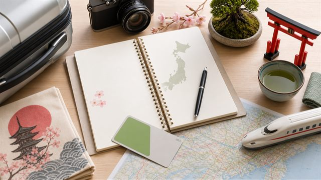
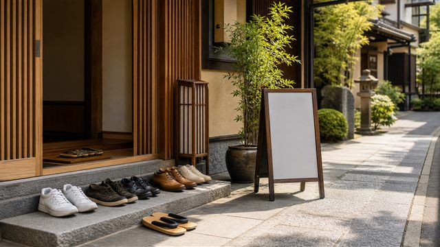
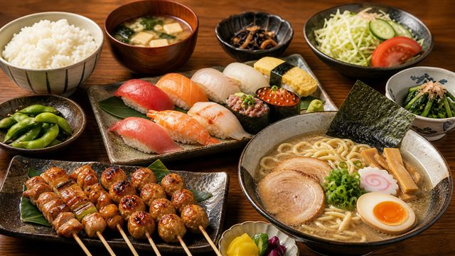
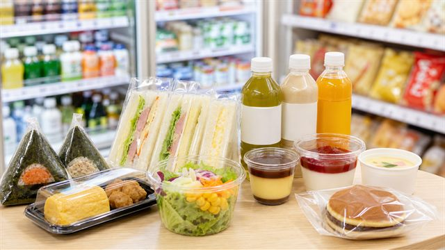
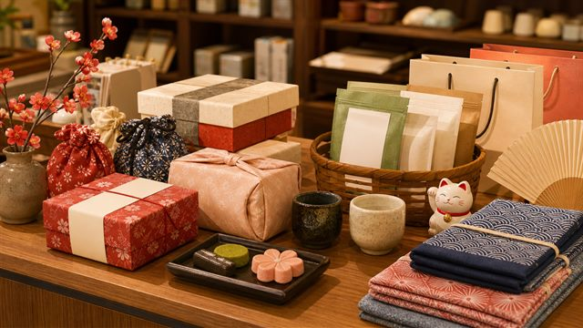
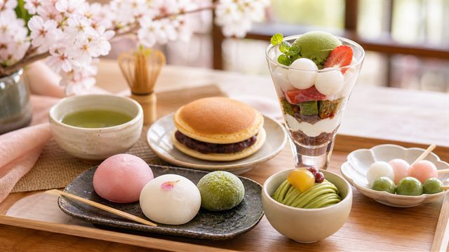

Japan Travel Guide for First-Time VisitorsA practical guide to avoid common mistakes.

Things to Know Before Visiting JapanRules, etiquette and basic travel tips.
Best Places to Visit in JapanMust-see spots for first-time visitors.

What to Eat in JapanJapanese foods to try during your trip.

Best Convenience Store Foods in JapanMust-try convenience store items for tourists.

Best Souvenirs to Buy in JapanSouvenir ideas tourists actually love.
Simple Japanese Phrases for TravelersBasic phrases for a smoother trip.
Japan Travel Tips to Make Your Trip BetterSimple ways to enjoy Japan more.
Hidden Gems to Discover in JapanQuieter places beyond famous spots.
Must-Try Japanese ServicesHelpful services for smoother travel.
Must-Visit Theme Parks in JapanTheme parks for a memorable trip.
Affordable and Delicious Foods in JapanLocal foods that are easy to try while traveling.

Must-Try Japanese SweetsClassic sweets and desserts to enjoy.